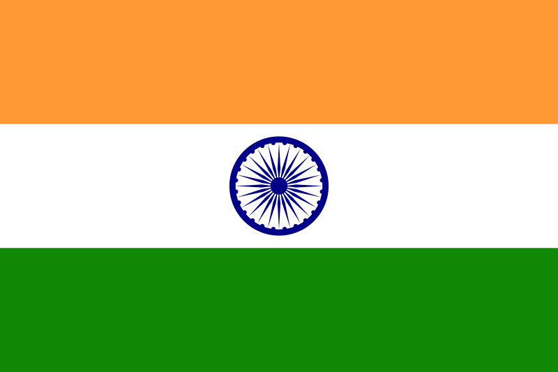
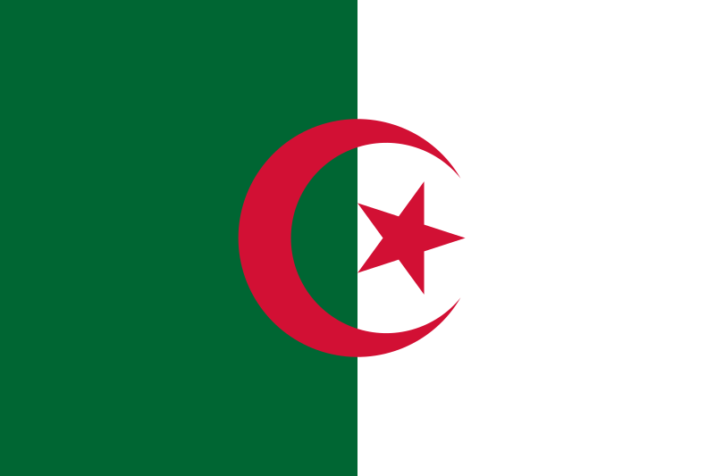
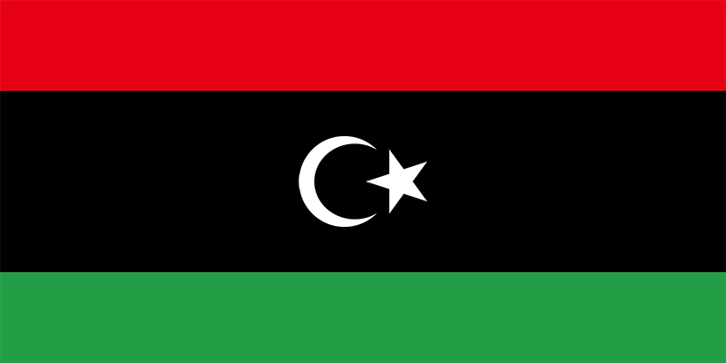
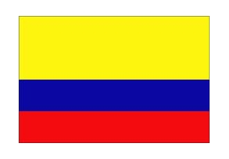
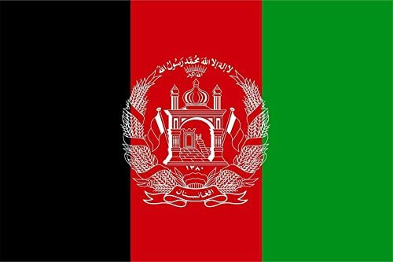
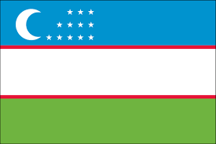
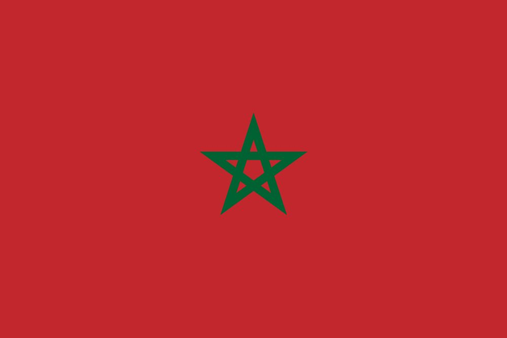
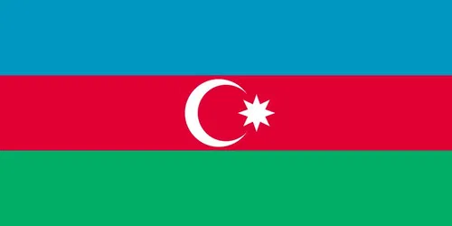

Rusiya
Rusiya
Hindistan Qazaxistan
Qazaxistan
Cezayir Kongo Dovleti
Kongo Dovleti Sudan
Sudan
Libya
Kalumbiya
Efganistan Fransa
Fransa Yemen
Yemen
Ozbekistan
Fas Iraq
Iraq
Azerbaycan| Adi | Boyukluk (km2 ile) | Siralama |
|---|---|---|
| Rusiya |
510 milyon km2 | 1 | Kanada | 10 milyon km2 | 2 | Cin | 9,7 milyon km2 | 3 |
| Amerika | 9,6 milyon km2 | 4 |
| Brazilya | 8,5 milyon km2 | 5 | Avstraliya | 7,6 milyon km2 | 6 |
|  Hindistan |
3,3 milyon km2 | 7 | Arjantin | 2,7 milyon km2 | 8 |
| Qazaxistan |
2,7 miyon km2 | 9 |  Cezayir |
2,3 milyon km2 | 10 |
| Kongo Dovleti |
2,3 milyon km2 | 11 | Danimarka | 2,1 milyon km2 | 12 |
| Seudi Erebistan | 2 milyon km2 | 13 | Endanezya | 1,9 milyon km2 | 14 |
| Sudan |
1,8 milyon km2 | 14 |  Libya |
1,7 milyon km2 | 15 |
| Iran | 1,6 milyon2 | 16 | Mogolistan | 1,5 milyon km2 | 17 |
| Peru | 1,3 milyon km2 | 18 |  Kalumbiya |
1,1 milyon km2 | 19 |
| Nigerya | 923 min km2 | 20 | Venezulla | 900 min km2 | 23 |
| Pakistan | 881 min km2 | 22 | Turkiye | 783 min km2 | 23 |
 Efganistan |
652 min km2 | 24 | Fransa |
640 min km2 | 25 |
| Somali | 637 min km2 | 26 | Ukranya | 603 min km2 | 27 |
| Yemen |
527 min km2 | 28 | Tayland | 513 km2 | 29 |
| Ispanya | 505 min km2 | 30 | Turkmenistan | 488 min km2 | 31 |
| Kamerun | 475 min km2 | 32 | Isvec | 450 min km2 | 33 |
 Ozbekistan |
447 min km2 | 34 |  Fas |
446 min km2 | 35 |
| Iraq |
438 min km 2 | 36 |  Azerbaycan |
86 min km2 | 37 |